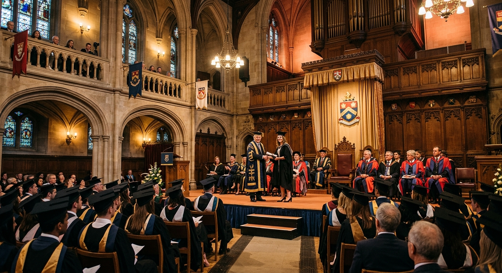
Abertura
Cerimónia de Abertura
Reitoria da U.Porto · 21 de setembro
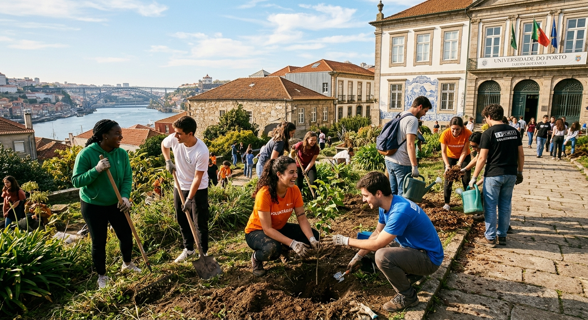
Semana da Cidadania, Voluntariado e Responsabilidade Social — 21 a 26 de setembro de 2026
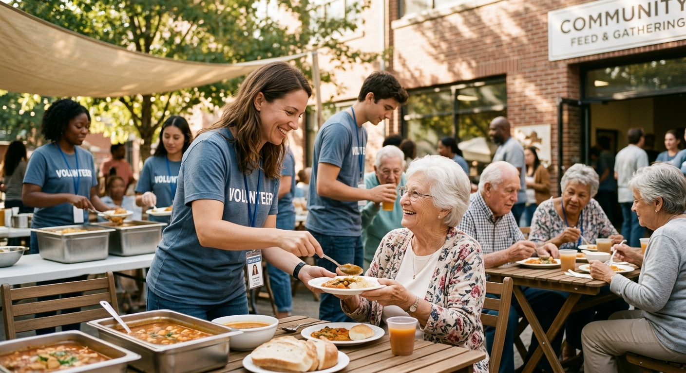
Uma semana dedicada à cidadania e ao voluntariado, promovida pela ReVIReS — Rede de Voluntariado, Inclusão e Responsabilidade Social da Universidade do Porto. Durante seis dias a Universidade abre as suas portas a ações de voluntariado, sensibilização e partilha.
Saber maisAtividades confirmadas

Reitoria da U.Porto · 21 de setembro
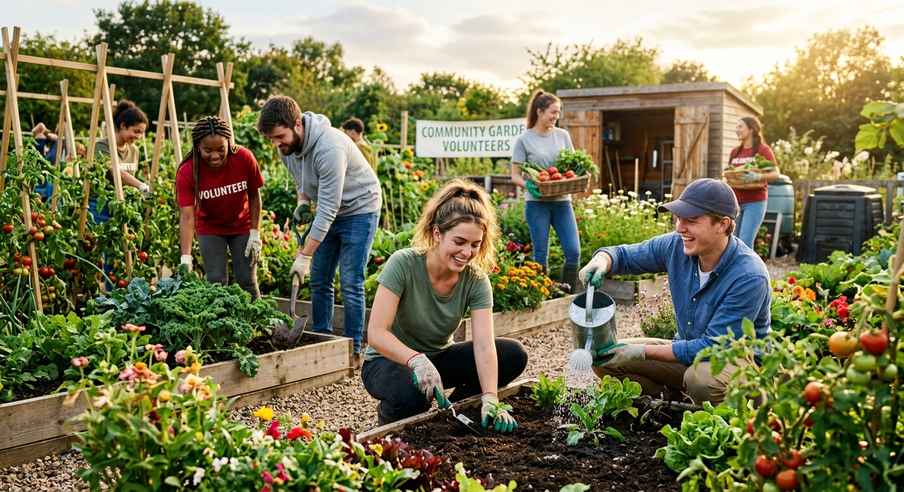
Diversas faculdades · 22 a 25 de setembro
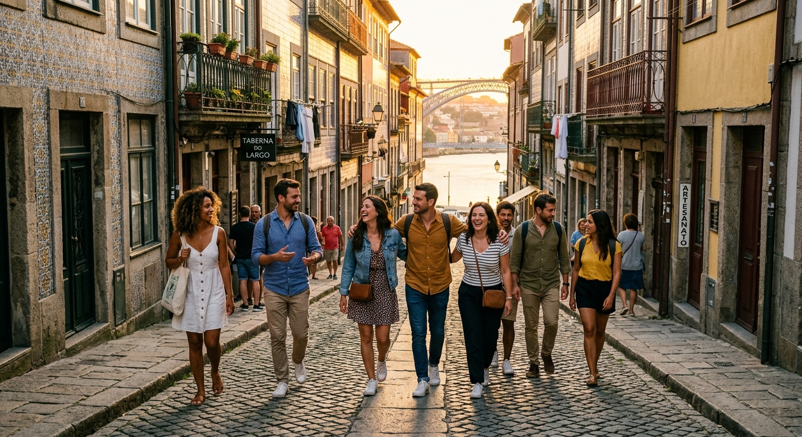
Percurso pelo centro do Porto · 26 de setembro
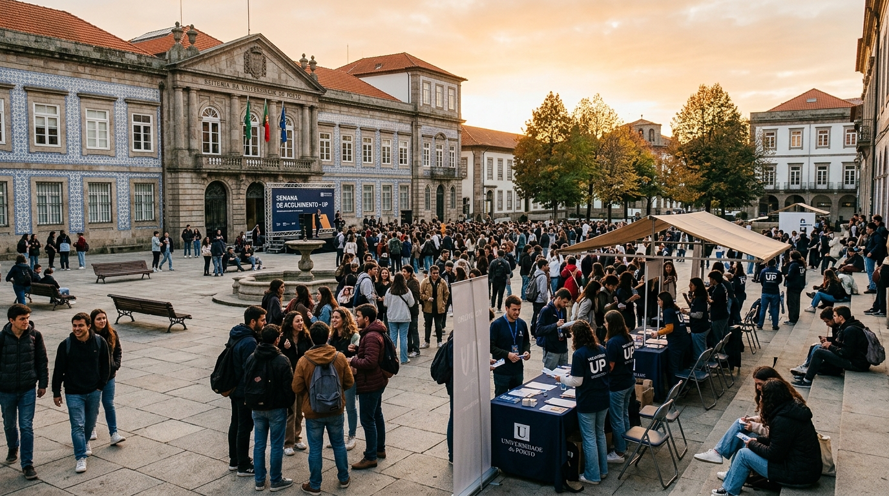
As atividades desta semana alinham-se com os Objetivos de Desenvolvimento Sustentável da ONU.
Mapeamento das atividades aos ODS em atualização.
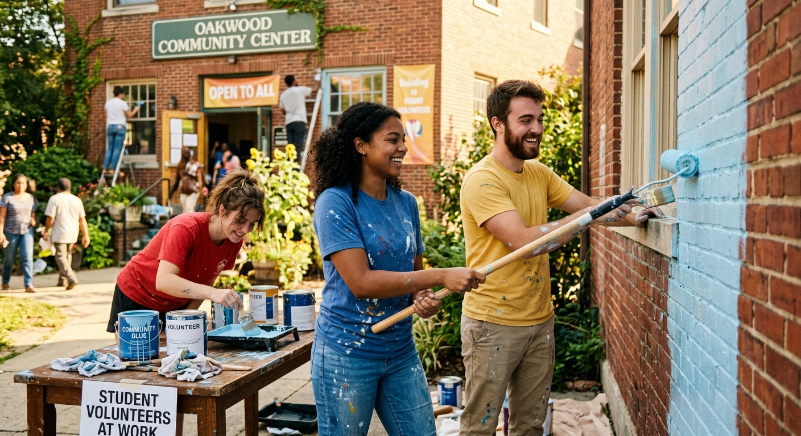
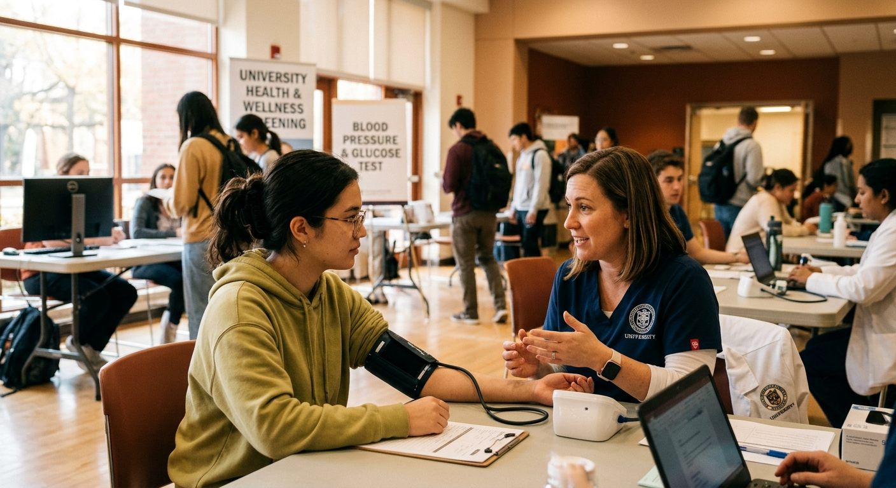
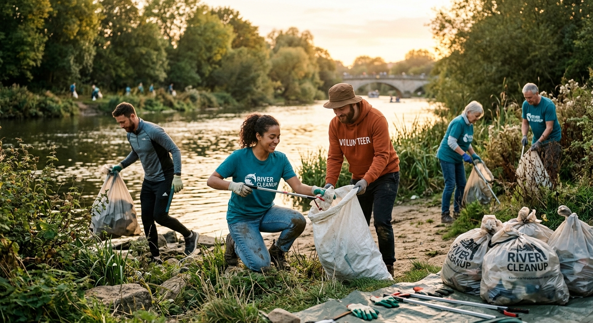
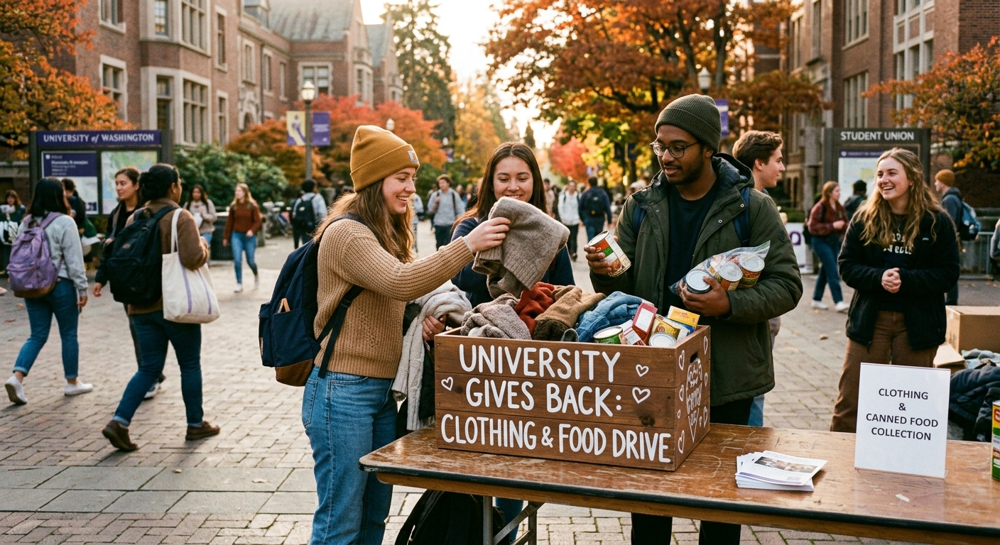
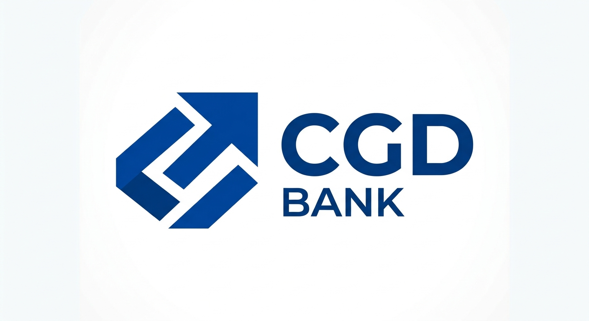
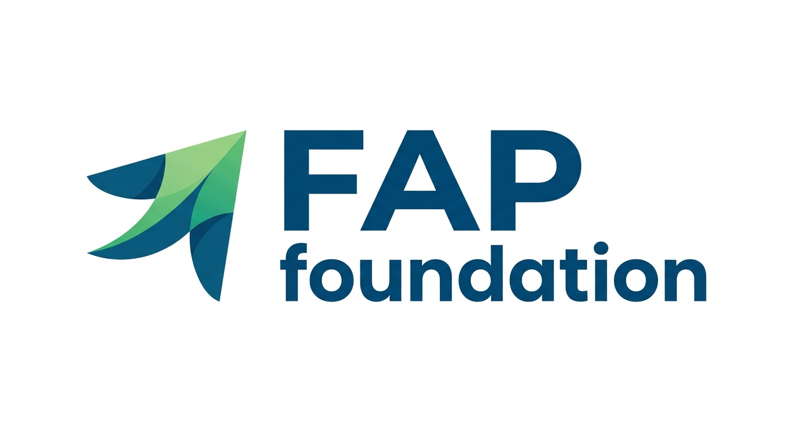
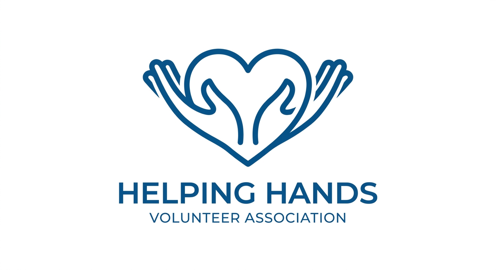
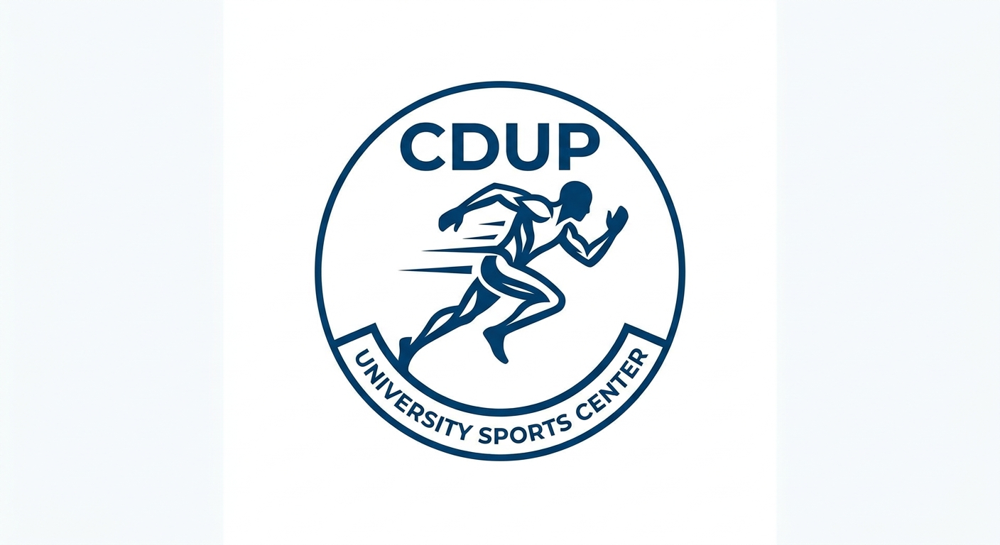
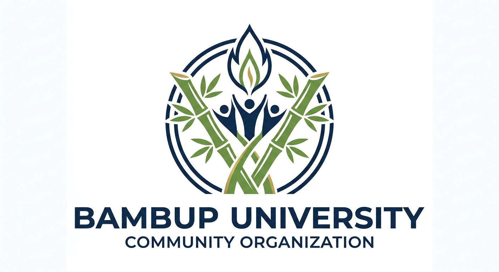